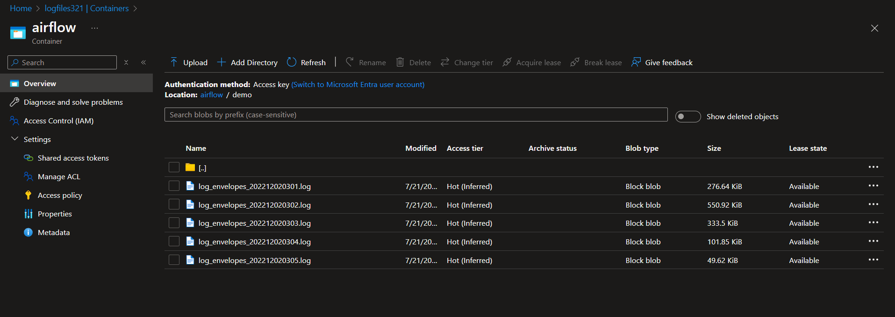
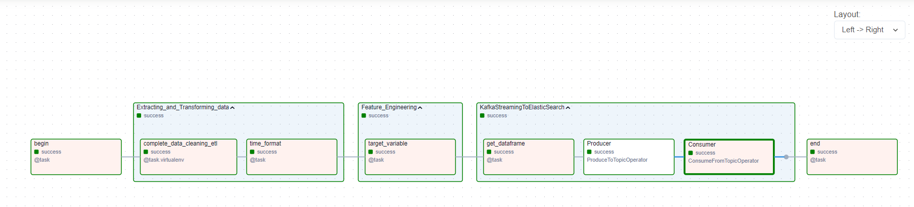
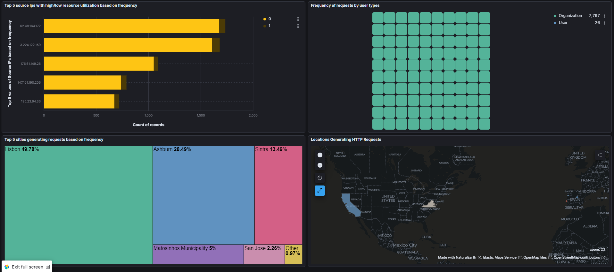
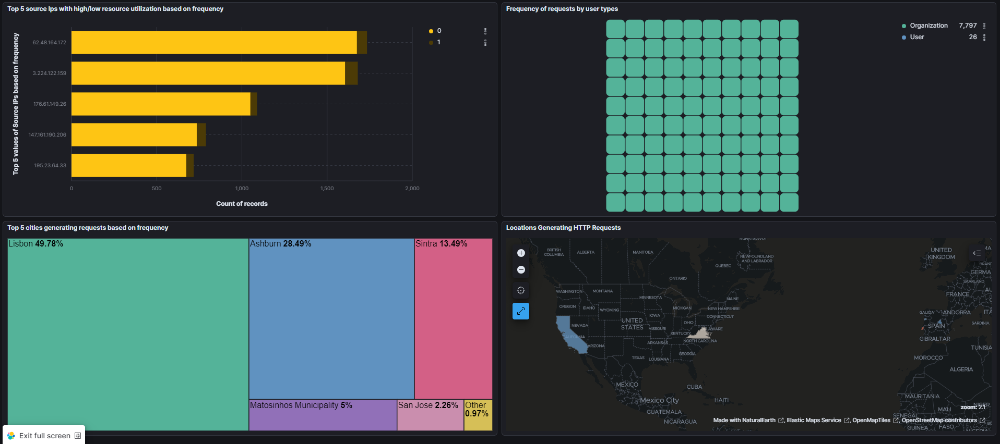
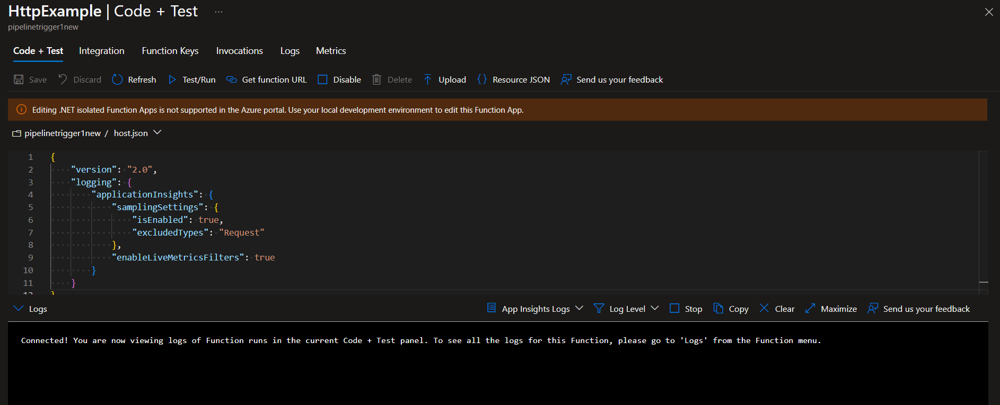
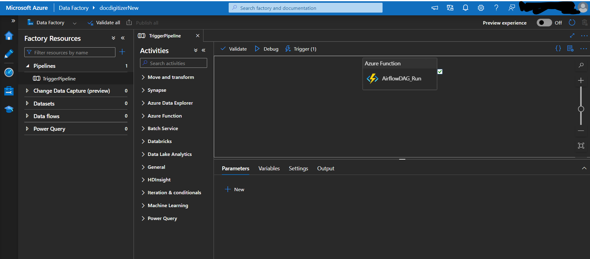

Out of Pattern Detection
Out of Pattern Detection in Cybersecurity Threat Analysis
In this project, we developed and deployed predictive models to identify and flag anomalous patterns in 16 GB of HTTP request log data. This significantly enhanced Docdigitizer's cybersecurity threat detection capabilities, helping to protect sensitive data and maintain system integrity.
Project Impact and Importance
This project was crucial in identifying potential cybersecurity threats in real-time by analyzing HTTP request patterns. The predictive models developed achieved an impressive 93% accuracy in anomaly detection, thereby improving the system's reliability and minimizing the risk of security breaches.
By utilizing a robust data pipeline with Apache Kafka, ElasticSearch, and Apache Airflow, we were able to efficiently handle and process large volumes of log data, allowing for scalable and real-time threat monitoring. The integration of various Azure services provided a seamless and automated workflow, ensuring quick and accurate detection of potential threats.
Key Tasks and Implementation
Task 1: Build Blob Storage Based Azure Data Lake Storage Gen2
Azure Data Lake Storage Gen2 was used for storing massive amounts of HTTP request logs. This provided a highly secure and scalable environment for data storage.
Task 2: Build Managed Identities in MS Azure
Managed Identities were created to ensure secure access to resources without the need for explicit credentials, enhancing the overall security of the pipeline.
Task 3: Set up Apache Kafka Client
Apache Kafka was set up for real-time data streaming. This allowed us to ingest large volumes of log data and seamlessly integrate with ElasticSearch for real-time analysis.
Task 4: Set up ElasticSearch Cloud for OLAP
ElasticSearch Cloud was used to store and analyze log data for Online Analytical Processing (OLAP), which enabled efficient querying and anomaly detection.
Task 5: Create Apache Airflow DAG on Astronomer Platform
An Apache Airflow DAG was created on the Astronomer platform to automate the workflow, from data extraction and transformation to ingestion into ElasticSearch via Apache Kafka.
Task 6: Set up Kibana for Building Dashboards on Elastic Cloud Platform
 

Kibana was utilized for building interactive dashboards, allowing for visualization of HTTP request patterns over various time periods and aiding in anomaly detection.
Task 7: Create MS Azure Function App
The Azure Function App was created to trigger events and automate parts of the data pipeline, ensuring timely execution of workflows.
Task 8: Create Pipeline in MS Azure Data Factory for Triggering Apache Airflow DAG
An Azure Data Factory Pipeline was set up to trigger the Apache Airflow DAG using storage events, further automating the workflow and enabling real-time processing of new log data.
Predictive Analytics
Exploratory Data Analysis (EDA) was performed on live-streamed data to identify patterns and outliers. The data was then exported from Kibana to CSV format, allowing for further predictive analysis.
Using machine learning models such as Logistic Regression, Decision Tree, and Random Forest, we achieved 93% accuracy in load factor estimation and anomaly detection, thereby enhancing the reliability of the system and reducing false-positive rates.
Conclusion
This project was successful in building a highly efficient and scalable data pipeline for cybersecurity threat detection. The integration of various cloud-based tools and platforms allowed for seamless data ingestion, transformation, analysis, and visualization, ultimately leading to a robust and reliable system for detecting anomalous patterns in HTTP request data.